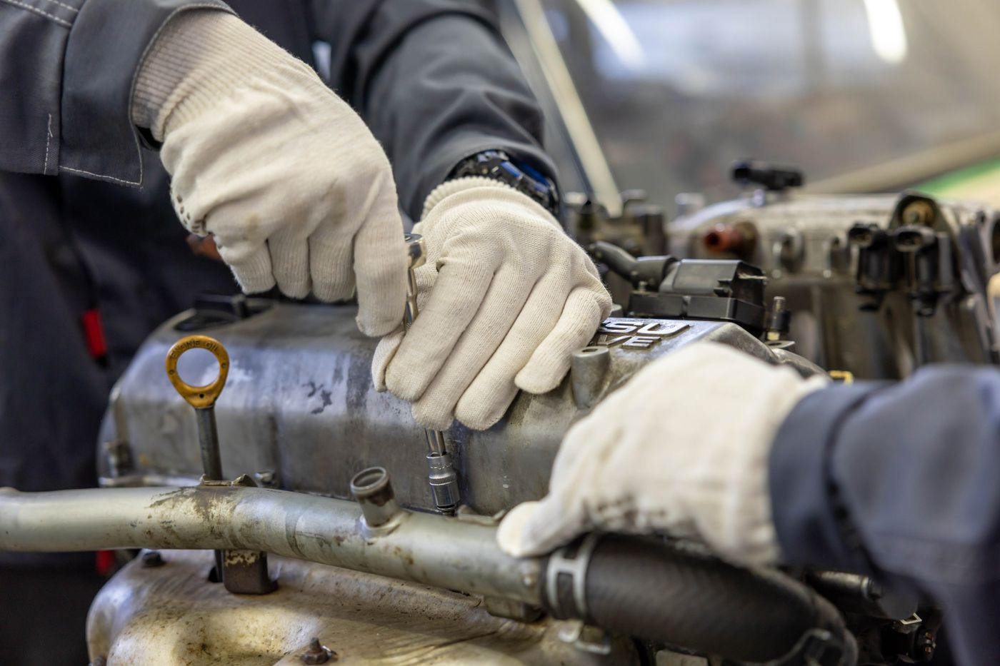

Tell us what you’ve noticed
Let us know about any warning lights, noises or changes in how the vehicle drives, along with any recent work.
SPECIALIST MECHANICAL & VEHICLE CARE
At Maltech, we carry out specialist engine repairs, investigate electrical and mechanical faults, and look after your vehicle’s routine servicing and maintenance.

WHAT WE DO
From an unexplained fault to a scheduled service,
we can help you work out what your vehicle needs.
Investigation and repair of engine faults, including more complex mechanical work.
↗ 02Electrical and general diagnostics for warning lights, recurring faults and problems that are difficult to trace.
↗ 03Regular servicing and maintenance to keep your vehicle in good working order.
↗ 04Checks and repairs for worn brakes, suspension faults, unusual noises and handling problems.
↗ 05Pre-sale and pre-purchase inspections, post-sale and post-purchase inspections, and general vehicle condition checks.
↗
VEHICLE INSPECTIONS
Buying or selling a vehicle? An inspection can help identify existing issues before you make a decision. We also offer checks after a purchase and general inspections for vehicles you already own.
THE MALTECH APPROACH
Let us know about any warning lights, noises or changes in how the vehicle drives, along with any recent work.
We investigate the fault to establish the cause and identify what work is needed.
We explain what we’ve found and discuss the proposed work with you before going ahead.
CONTACT MALTECH